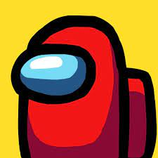

JOGOS MOBILE
Neste artigo você ira conhecer alguns jogos para dispositivos móveis!
CarX Street
CarX Street é um jogo de corrida em mundo aberto, onde o jogador pode percorrer o mapa em busca de missoões e corridas para ganhar recompensas e adquirir uma grande variedade de veículos. O jogo também conta com o modo Multiplayer onde diversos jogadores podem apostar corridas entre si e se divertir da forma que desejam.
Five Nights at Freedy`s 4
Five Nights at Freedy`s 4 é um jogo de terror e suspense, onde você é uma criança que está sozinha em casa com animatronicos que tentam lhe pegar, você deve sobreviver 5 noites aos ataques e sustos destes animatronicos, mas não será fácil, a cada noite que passa o jogo e os desafios ficam mais difíceis.
Among us
Among us é um jogo multiplayer onde você deve encontrar e descobrir quem é o impostor, ou deve matar todos da nave onde está sem que você seja descoberto e ejetado dela, o jogo tem uma mecânica simples e prática e você pode se divertir muito.
APLICATIVOS RECOMENDADOS
Neste artigo você ira conhecer alguns aplicativos interessantes!
Capcut
CapCut é um aplicativo de edição de videos fácil de ser utilizado, proporcionando diversos modelos, fundos, efeitos e diversas outras opções para o usuário.
Mobizen
Mobizen é um gravador de tela bem fácil de ser utilizado, possui uma ótima funcionalidade e não ocupa muito espaço na memória interna.
.jpg)
Spotify
Spotify é um aplicativo de reprodução de música, nele você pode escolher a sua playlist para ouvir ou até mesmo criar a sua para compartilhar com outras pessoas.